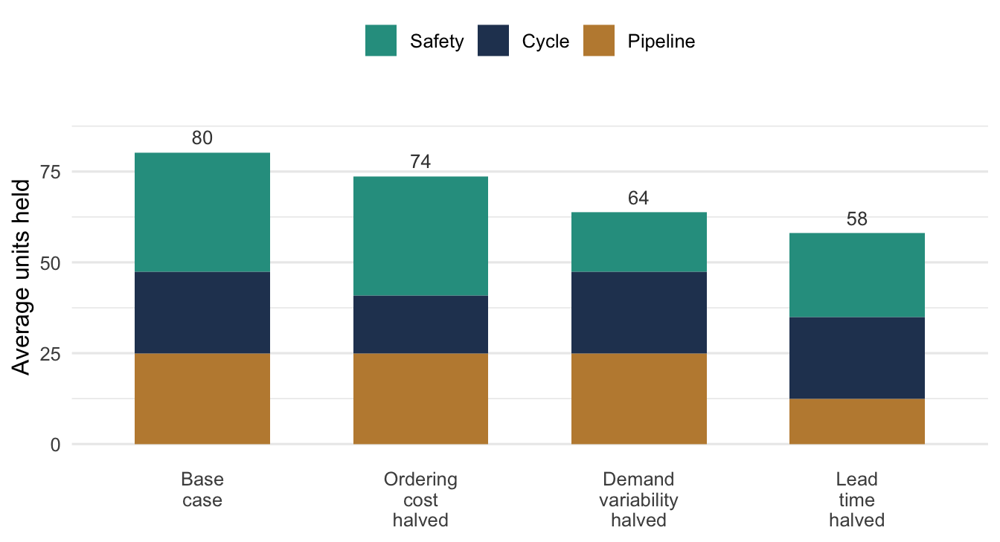
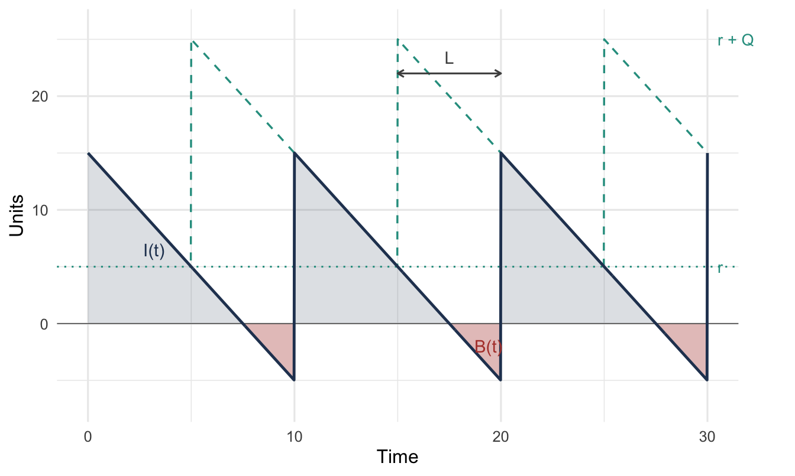
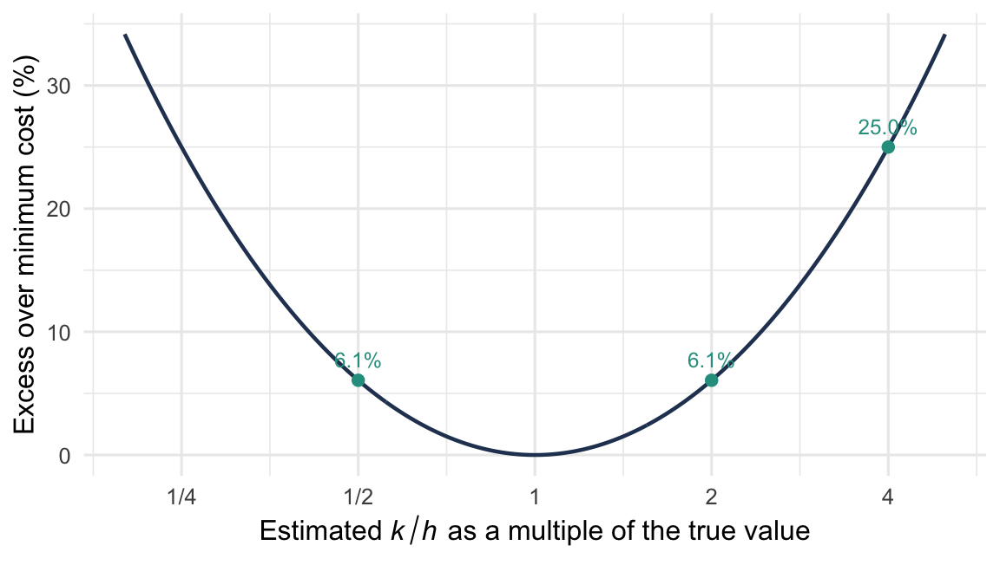

1 Introduction to Inventory Systems
NoteLearning objectives
After reading this chapter you should be able to:
- explain why organizations hold inventory, and what it costs them
- classify an inventory system by its demand, review, and lead-time characteristics
- define the state variables of an inventory system (on hand, on order, backordered, inventory position) and the time averages built from them
- define the cost parameters used by inventory models, and state what each one multiplies
- decide which costs belong in a given parameter and reject those that do not
- estimate each parameter from standard accounting and transaction data
- distinguish the cost and service measures used to evaluate a policy
- state the general problem that the rest of the book solves
1.1 Why Hold Inventory?
Inventory is capital converted into a form that cannot be spent. An organization holding forty million dollars of stock has forty million dollars it cannot use for anything else, sitting in a building it must heat and insure, exposed to theft, damage, and the possibility that nobody will ever want it. Held long enough, some of it will be written off. Thus, on any ordinary accounting of costs, inventory looks like a mistake.
It is not a mistake. Inventory exists to decouple, i.e. to break a linkage between two processes that would otherwise have to operate in lockstep. Supply and demand are separated in space, in time, in rate, and in predictability, and each separation forces stock into existence somewhere. Take the inventory away without removing the separation and the two processes must synchronize, which usually means one of them stops.
Each kind of separation creates a distinct kind of inventory, with a distinct cause and therefore a distinct lever for reducing it. Confusing them is the most expensive error in inventory management. In the sections that follow we take the five kinds in turn.
1.1.1 Pipeline Inventory
Supply and demand are separated in space and time. Units ordered from a supplier do not arrive at the loading dock the instant they are ordered. They spend the lead time in transit, in production, or awaiting inspection, and during that time they are owned, paid for, and unavailable. Those units are pipeline or in-transit inventory.
Notice that its size is not a decision. Equation 1.5 gives \(\overline{\mathit{IO}} = \lambda\overline{L}\), i.e. the demand rate times the average lead time and nothing else. For example, an organization selling a hundred units a week from a supplier six weeks away owns six hundred units in transit at all times, whatever its reorder point. The only ways to change that number are to sell less or to source closer.
1.1.2 Cycle Inventory
Supply and demand are separated in rate. Consumption is more or less continuous, while replenishment arrives in discrete lots. Between one delivery and the next, the stock drawn down is inventory that exists only because the arrival was a lot and not a trickle. That is cycle inventory, and it averages half the lot size.
It exists because replenishing is not free. Something is incurred once per order regardless of size, e.g. the administrative cost \(k\) of Section 1.4.5, a production setup, or a truck that costs the same whether half full or full. That fixed charge makes ordering in batches cheaper than ordering continuously. Cycle inventory is the price paid to avoid it.
The lever is the fixed cost, not the ordering rule. Electronic ordering, blanket contracts, and setup time reduction all attack cycle inventory at its cause. Instructing the buyer to order less at a time does not, because it only moves cost from holding into ordering.
1.1.3 Safety Inventory
Supply and demand are separated in predictability. Demand over a lead time is not known in advance, and neither, often, is the lead time. Stock held against that uncertainty, beyond what average demand over the average lead time requires, is safety inventory.
Safety stock is created by variability, not by level. If demand were a steady hundred units a week and the lead time exactly six weeks every time, then no safety stock would be needed at any service target, however demanding, because the reorder point could be set exactly. That is, it is the variance, not the mean, that has to be covered.
It is also the only kind of inventory that is a direct purchase of service. The others buy transportation or production economies, while safety stock buys the probability of being able to fill a demand, which Section 1.6 measures.
1.1.4 Anticipation Inventory
Supply and demand are separated in rate over a horizon, in a way that is known in advance. For example, a plant with fixed capacity facing a seasonal peak must build ahead of the peak or fail to meet it, and a distributor expecting a promotion, a price increase, a plant shutdown, or a holiday closure stocks up beforehand.
What separates anticipation from safety inventory is that the variation is foreseen. That is, it is covered not because it might happen but because it will. Thus, the lever is capacity or flexibility, not the replenishment policy, and the decision is usually made outside the inventory system.
1.1.5 Speculative Inventory
Speculative inventory is held because the item is expected to cost more later, or to become unavailable. For example, a hedge against a commodity price, a buy-ahead against an announced increase, or a strategic reserve against a supply interruption.
This is a financial position denominated in goods, governed by a view about future prices, not by any mechanics in this book. It appears here because it turns up on real balance sheets, where it can dominate the operational categories and distort any attempt to benchmark them.
1.1.6 Different Causes, Different Levers
Table 1.1 collects the distinctions. Reading across a row gives the cause of that kind of inventory and the intervention that follows from it. Notice that no two rows share an entry in the last column.
| Type | What it decouples | Created by | Reduced by |
|---|---|---|---|
| Pipeline | Supply and demand in space and time | Lead time | Shorter lead time; closer sourcing |
| Cycle | Continuous consumption from discrete replenishment | A fixed cost per order or per setup | Cheaper ordering; faster setups |
| Safety | The system from uncertainty | Variability in demand and lead time | Less variability; shorter lead time; less service |
| Anticipation | Fixed capacity from foreseen variation in demand | A capacity constraint | More or more flexible capacity |
| Speculative | The purchase decision from the price | An expected price or supply movement | A change of view about the future |
A directive to reduce inventory by twenty percent is not actionable, because it does not say which kind. Each of the five responds to a different intervention, most of those interventions take months, and exactly one of them, reducing safety stock, can be executed by decree.
That asymmetry makes the unspecified mandate dangerous. Faced with a target and a deadline, the only lever available on the deadline is the safety stock. So that is the lever that gets pulled, and inventory falls on schedule. The consequence arrives one lead time later as stockouts, by which time it is attributed to demand, to suppliers, or to bad luck. The mandate was met, and the service was spent to meet it.
Figure 1.1 shows the same point for a representative item, using results derived in Chapter 3 and Chapter 8. Each bar is the total stock remaining after one lever has been pulled, with the components stacked so that the pipeline, cycle, and safety contributions can be read separately. Notice that halving the fixed order cost moves only the cycle component, and that halving the variability of demand moves only the safety component. Halving the lead time moves two of the three at once.
That is why lead time wins. It is the only one of the three levers that appears in two components, directly in the pipeline and through the exposure window in the safety stock. Thus, lead time reduction is the most reliably underrated lever in inventory management.
1.1.7 The Cost of Not Holding It
All of this reads as an argument that inventory is a symptom of problems elsewhere, e.g. long lead times, expensive setups, or unpredictable demand. That much is correct. However, the conclusion sometimes drawn from it, that the right target is therefore zero, does not follow.
Inventory is not waste. It is a purchase, and what it buys is the ability to serve a demand from stock committed before anyone knew the demand would come. Thus, removing it without removing what created it converts a holding cost into a shortage cost, and shortage costs are the ones that appear on no ledger (Section 1.4.6).
The question is never whether to hold inventory. It is how much, and when to replenish, given what holding costs and what not holding costs. Every model in this book answers that pair of questions under a particular set of assumptions about demand, lead times, costs, and review. The assumptions change from chapter to chapter. The question does not.
1.2 Classifying Inventory Systems
There is no single inventory model, and there could not be. For example, a hospital stocking a drug that expires, a distributor replenishing a fast moving consumable from a supplier three weeks away, and a manufacturer scheduling components against next quarter’s build plan are all managing inventory, and almost nothing carries from one to the next. What they share is the pair of questions from Section 1.1, how much and when. They do not share the machinery that answers them.
Classification is how you find the machinery. Each dimension below is a question whose answer eliminates some models and selects others, and the chapters of this book are organized around the answers. Notice that most modeling errors in practice are not arithmetic errors. They are a model applied to a system it does not fit.
NoteA property of the system, not of the model
These are characteristics of the real system, in the sense of Section 1.3. For example, a supplier’s lead time has a distribution whether or not your model represents it as a constant. Choosing to treat it as constant is an approximation you make deliberately, having judged that the decision at hand is insensitive to the difference. It is not a discovery that the lead time is constant.
1.2.1 Where the Demand Comes From
The first question, because it governs whether anything else in this book applies.
Independent demand arises outside the system. End customers want the item for its own sake, and their wanting it is not deducible from anything the organization has scheduled. It must be observed, characterized, and, where it is uncertain, described by a probability distribution.
Dependent demand is implied. Demand for a component follows from the production schedule for the assembly that consumes it, and that schedule is already known. Such demand should be calculated, not forecast; forecasting it independently discards information the organization already has. Chapter 6 is about the calculation.
Every other dimension below concerns independent demand, so this question comes first. Thus, if you answer it “dependent” the correct treatment is requirements planning, regardless of how the remaining dimensions fall.
1.2.2 Known or Uncertain Demand
This is the dividing line of the book, and the reason it has two parts.
Deterministic demand is known in advance. Known does not mean constant: demand may vary from period to period and still be deterministic, provided the variation is known before the decisions are made. It means no probability distribution is needed.
Stochastic demand is uncertain and must be described by a distribution. The question then changes character, from “what will demand be” to “how much protection against what it might be,” and every result acquires a service dimension it did not have before.
No real demand is deterministic. We use deterministic models anyway, and legitimately, in two situations: when variability is small relative to the decision, so ignoring it changes nothing that matters, and when the model sits inside a larger deterministic plan, as lot sizing does inside a material requirements plan. Thus, the justification is the quality of the approximation, never a claim that demand is actually known.
1.2.3 Constant or Time-Varying Demand
Within either case, demand may proceed at a steady rate or change over the horizon.
A constant rate permits a single order quantity, repeated indefinitely. That is the setting of Chapter 3. A time-varying rate destroys that: with demand of 10 units this month and 400 next, no single lot size is sensible, and the problem becomes choosing a schedule of order sizes and timings. Chapter 5 treats the deterministic time-varying case.
The stochastic analogue separates stationary demand, whose distribution does not change over time, from non-stationary demand, whose does. Seasonality, product life cycles, and promotions all produce non-stationarity, and it is substantially harder. The policies of Chapter 8 and Chapter 9 assume stationarity, and the usual treatment of a seasonal item is to re-solve the stationary problem periodically with updated parameters, and not to pretend the assumption holds.
1.2.4 How the System Is Reviewed
Continuous review means the inventory position is known at all times and an order may be placed at any instant. The policies of Chapter 8 trigger on the position crossing a threshold, which requires knowing the moment it crosses.
Periodic review means the position is observed at fixed intervals, and orders may be placed only at those moments. Chapter 9 develops the corresponding policies, in which the review interval becomes a parameter and adds its own exposure to risk: between reviews, the system cannot respond to anything.
Historically this was a technology constraint, since continuous review required a perpetual inventory record that manual systems could not maintain. That constraint is largely gone, and the distinction survives for a better reason. Review is often logistically periodic even when it is informationally continuous: if a truck calls weekly, knowing the position continuously confers no ability to order continuously. Classify by when an order can be placed, not by when the position can be seen.
1.2.5 The Lead Time
The interval between placing a replenishment order and having it available to satisfy demand.
A zero lead time is a simplification, not an approximation. With replenishment instantaneous there is no exposure between ordering and receiving, so no reorder point is needed and no safety stock. Several classical results assume it.
A constant lead time is the usual working assumption, and it makes the lead-time demand distribution of Chapter 8 tractable.
A random lead time compounds with demand uncertainty, since what matters is demand over an interval that is itself uncertain. That is, both the rate and the length of the exposure are unknown when the order is placed. It also raises a possibility usually assumed away: order crossing, where an order placed later arrives earlier. Most models assume orders arrive in the sequence placed. That is harmless when lead-time variability is modest relative to the time between orders, and not harmless for a system ordering frequently from a source with erratic transit.
1.2.6 What Happens to Unmet Demand
Whether a demand arriving to an empty shelf waits or departs, discussed as a state distinction in Section 1.3.2.
Under backordering the demand waits and is filled later, so the system carries an obligation, \(B(t)\), and pays for the waiting through \(b\). Under lost sales the demand departs, nothing is owed, and the failure is charged once through \(\pi\). Partial backordering, where some customers wait and others do not, is the common reality and is usually modeled as one of the two extremes with the choice stated.
This is not only a costing convention. It changes what the system can do: under lost sales net inventory can never go negative, and the state description is smaller.
1.2.7 The Planning Horizon
A single-period problem is decided once. Stock is committed before demand is observed, demand occurs, and whatever is left has no further use. This is the newsvendor setting of Chapter 7, and it is not the multi-period problem with the number of periods set to one. Leftover stock has no future value, so the trade-off is purely one of overage against underage.
A finite-horizon problem has an end date that matters: a service part for equipment being retired, a component for a product with an announced end of life. The last order is a newsvendor problem in disguise.
An infinite-horizon problem assumes the system continues indefinitely, which licenses long-run averages as the objective. It is the setting of Chapter 8 and Chapter 9, and the assumption is usually harmless: what it requires is a horizon long relative to the replenishment cycle.
1.2.8 One Item or Many
If items are genuinely independent, a multi-item problem is many single-item problems and nothing is gained by treating them together.
Items become coupled in two ways. A shared constraint (a budget, a storage capacity, a supplier’s minimum) means one item’s order quantity restricts another’s, so the items must be solved jointly. A shared setup (several items on one purchase order or one truck) means ordering them together costs less than ordering them separately, which is the joint replenishment problem. Chapter 4 treats both.
Most organizations manage tens of thousands of items and cannot make a considered decision about each. Classification by value and volume, with policies applied by class instead of by item, is how that is handled, and Section 2.2 treats it.
1.2.9 One Location or Several
A single stocking point faces external demand and an external supplier.
A multi-echelon system has stocking points that supply each other: a central warehouse replenishing branches, a depot supplying bases. This is not several single-location problems, and treating it as such is a standard and expensive error. The demand a warehouse sees is not customer demand. It is the replenishment orders of the locations it serves, which are lumpier than the demand underneath them and are shaped by those locations’ own ordering policies. Stock held at one level substitutes for stock at another, so the levels cannot be optimized independently. Chapter 10 takes this up.
1.2.10 The Dimensions Together
Table 1.2 collects the questions and where each answer is treated.
| Dimension | Alternatives | Where treated |
|---|---|---|
| Origin of demand | Independent / dependent | Chapter 6 for dependent |
| Certainty of demand | Deterministic / stochastic | Part I / Part II |
| Behavior over time | Constant / time-varying; stationary / non-stationary | Chapter 3, Chapter 5 |
| Review | Continuous / periodic | Chapter 8, Chapter 9 |
| Lead time | Zero / constant / random | Chapter 8 |
| Unmet demand | Backordered / lost / partial | Section 1.3.2 |
| Horizon | Single period / finite / infinite | Chapter 7; Chapter 8 |
| Items | One / many independent / many coupled | Chapter 4 |
| Locations | One / multi-echelon | Chapter 10 |
Read Table 1.2 as a questionnaire, not as a taxonomy. The left column is the question you ask of the system in front of you, the middle column is the set of answers the question admits, and the right column is where this book takes that answer up. Notice that the second row, the certainty of demand, is the only one that splits the book itself. Every row above it and below it recurs on both sides of that split, so review, lead time, and the treatment of unmet demand each appear twice in the book under different assumptions about demand.
Nine questions describe a large number of combinations, and this book does not address all of them. It addresses the ones that occur, and the ones whose answers illuminate the rest.
1.2.11 Which Costs the Classification Implies
Classifying a system also narrows which of the cost parameters of Section 1.4 matter. Estimation effort is expensive and should not be spread evenly.
| If the system is… | The costs that decide the answer are… |
|---|---|
| Deterministic, no shortages permitted | \(k\) and \(h\) only. Shortage costs never arise; unit cost enters only through \(h\). |
| Deterministic, shortages permitted | \(k\), \(h\), and \(b\). The backorder cost sets how deep the system is allowed to run negative. |
| Single period | The overage and underage costs: \(c\), the salvage value, and \(\pi\). Ordering cost is irrelevant because there is one order. |
| Stochastic, backordering | \(k\), \(h\), and \(b\), or \(k\), \(h\) and a service target standing in for \(b\). |
| Stochastic, lost sales | \(k\), \(h\), and \(\pi\). |
| Multi-location | All of the above, plus \(f\), which is what penalizes stocking an item in more places. |
Notice that the first row of Table 1.3 names only two parameters. A deterministic system in which shortages are not permitted never realizes a shortage, so no amount of care spent estimating one changes the answer, and Chapter 3 derives its order quantity from \(k\) and \(h\) alone. Notice also that \(\pi\) and \(b\) never appear in the same row. A demand that is lost is not also backordered, and a model that charges both for the same event has double counted, which Section 1.5.6 takes up. Thus, you should settle the classification before any estimation begins, because it tells you which two or three numbers deserve the effort.
1.2.12 Choosing a Classification
Real systems do not present themselves neatly. Demand is neither purely independent nor purely dependent; some customers wait and some do not; lead times are usually stable and occasionally not. Every classification is therefore a decision, and it should be made on a single criterion:
ImportantThe criterion
Choose the simplest classification that preserves what the decision is sensitive to.
Simplicity repays real effort, because a simpler classification yields a model whose behavior can be understood and whose parameters can be estimated. But simplicity that discards what the answer depends on is not simplification. It is an error with a smaller model attached.
The criterion is testable. When it is unclear whether a distinction matters, whether lead-time variability needs representing or the occasional lost sale needs its own treatment, model it both ways and compare the recommendations. If they agree, the comparison is the justification for the simpler classification. If they disagree, the question has answered itself. This is one of the things simulation is for, and Chapter 11 returns to it.
1.3 The State of an Inventory System
Before anything can be optimized it has to be described. This section defines the quantities that describe an inventory system at a point in time, and the averages built from them. They are properties of the physical system. That is, an observer with a clipboard, who knows nothing about how replenishment is controlled and nothing about probability, could walk into the warehouse and measure every one of them.
You should insist on that, because it locates what a model is for. The deterministic models of Chapter 3 and the stochastic models of Chapter 8 are not describing different systems, and they do not have different state variables. They are two ways of computing the same quantities under different assumptions about what is known. Everything in Section 1.4 and Section 1.6 is expressed in the variables defined here.
1.3.1 On Hand, On Order, and Backordered
Three counts describe the system at time \(t\). Note that a policy does not read these counts from the shelf; it reads them from a record, and the two can differ. Section 2.3 is about that gap and how it is measured and closed.
Let \(I(t)\) represent the inventory on hand at time \(t\), meaning the units physically present and available to satisfy a demand. Let \(\mathit{IO}(t)\) represent the inventory on order, meaning the units ordered from the supplier but not yet arrived, the replenishment pipeline of Section 1.1.1. Let \(B(t)\) represent the backorders, meaning the units demanded but not yet supplied, which the system is still committed to supplying.
All three are counts of units and none of them can be negative. From them we build two composites. The net inventory
\[ \mathit{IN}(t) \;=\; I(t) - B(t) \tag{1.1}\]
is positive when the system holds stock and negative when it owes units, and it is the single number that summarizes whether the system is ahead or behind. The inventory position
\[ \mathit{IP}(t) \;=\; I(t) + \mathit{IO}(t) - B(t) \tag{1.2}\]
adds what is already coming.
One structural fact does a great deal of work throughout the book:
ImportantOn hand and backordered are never both positive
If \(I(t) > 0\) then \(B(t) = 0\), and if \(B(t) > 0\) then \(I(t) = 0\).
A system holding stock while owing units would be one that had received inventory and declined to ship it to a waiting customer. Under the ordinary assumption that arriving replenishments fill outstanding backorders first, that situation never arises. Thus, at every instant at most one of the two is positive, and \(\mathit{IN}(t)\) determines both: \(I(t) = [\mathit{IN}(t)]^{+}\) and \(B(t) = [\mathit{IN}(t)]^{-}\).
This is also what makes the cost model of Section 1.4 coherent. The holding cost charges \(I(t)\) and the backorder cost charges \(B(t)\); because the two are never simultaneously positive, no unit is ever charged both ways, and the total is unambiguous.
1.3.2 Lost Sales
Everything above assumes an unsatisfied demand waits. That is one of two possibilities, and the other changes the state description and not merely the arithmetic.
Under lost sales, a demand that cannot be filled from stock departs and does not return. Nothing is owed, so
\[ B(t) \equiv 0, \qquad \mathit{IN}(t) = I(t) \ge 0, \qquad \mathit{IP}(t) = I(t) + \mathit{IO}(t) \]
for all \(t\). The state collapses to two counts, net inventory can never go negative, and the backorder cost \(b\) has nothing to multiply.
What takes its place is the rate of lost demand. Let \(\lambda_{\ell}\) represent the rate, in units per unit time, at which demand arrives and departs unfilled, and let \(\lambda\) represent the overall demand rate in the same units. Since a demand is lost exactly when it arrives to an empty shelf,
\[ \lambda_{\ell} \;=\; \lambda\left(1 - \overline{\mathit{FR}}_{u}\right) \tag{1.3}\]
where \(\overline{\mathit{FR}}_{u}\) is the fraction of demanded units filled from stock, defined in Section 1.6. This is the quantity the stockout cost \(\pi\) multiplies in Table 1.4, and writing it out shows why that term is a genuine rate while the backorder term is a level. That is, lost demand is a flow of units past the system, whereas backorders are a population sitting inside it.
The same quantity exists under backordering, since demand arrives to an empty shelf there too, but it is not what the cost model charges. There the harm is the waiting, not the loss.
Which regime applies is a fact about the system, not a modeling convenience. For example, a distributor whose customers will wait a week for a spare part is backordering, while a retail shelf whose customers walk to a competitor is losing sales. Many real systems are partially both, and the usual treatment is to model the dominant case and say so. This book develops the backorder case in detail, because it is the harder of the two and because the lost-sales results follow from setting \(B(t) \equiv 0\).
1.3.3 Why Ordering Decisions Use the Inventory Position
Every replenishment policy in this book triggers on \(\mathit{IP}(t)\), never on \(I(t)\) alone, and you should understand the reason before the policies arrive.
Suppose a system reorders whenever on-hand inventory falls to some level. Stock runs down, the level is reached, an order is placed. The lead time has not yet elapsed, so on-hand inventory keeps falling, and the trigger level is still breached, so the rule places another order, and another, each for a shortfall the first order is already on its way to cover. Thus, by the time the shipments arrive the system is grossly overstocked.
Including \(\mathit{IO}(t)\) is what prevents this. Because outstanding orders are counted in \(\mathit{IP}(t)\), placing an order raises the position immediately, and the system orders again only when what is already outstanding is no longer enough. The position is what the system will eventually have; the on-hand inventory is only what it has now.
Figure 1.2 shows both for a system operating an \((r, Q)\) policy, which orders \(Q\) units whenever the position falls to \(r\). Let \(r\) represent the reorder point, in units, and let \(Q\) represent the fixed order quantity, also in units. The position sawtooths between \(r\) and \(r + Q\). Net inventory follows the same pattern delayed by the lead time, so net inventory, and not the position, runs short.

Walk across Figure 1.2 from left to right. The dashed line is the inventory position and the solid line is net inventory. Both start high, just after a receipt, and both decline at the demand rate. Notice that the two lines lie on top of each other over the early part of each cycle. That is the stretch during which no order is outstanding, so \(\mathit{IO}(t) = 0\) and Equation 1.2 reduces to Equation 1.1. The dashed line then reaches the dotted line at \(r\), an order is placed, and the position jumps by \(Q\) to \(r + Q\) while net inventory does not move at all, because nothing has arrived. The two lines run apart for exactly one lead time \(L\), marked by the double arrow. Net inventory continues its decline through that interval, crosses zero, and the shaded region below the axis is the backorders \(B(t)\) accumulating while the order is in transit. When the order arrives, net inventory jumps by \(Q\), the backorders are filled first, and the cycle repeats. Thus, the reorder point \(r\) does not determine when the system runs out. What determines that is \(r\) measured against demand over the lead time. Chapter 8 is built on that calculation.
Each state variable is a time-persistent quantity: it holds a value over an interval instead of being observed at isolated instants. Thus, its average is a time average, computed by integrating over the observation interval and dividing by its length. Let \(T\) represent the length of that interval, in the same time units as the demand rate, and let \(\bar{I}\) and \(\bar{B}\) represent the resulting averages, in units:
\[ \bar{I} \;=\; \frac{1}{T}\int_{0}^{T} I(t)\,\mathrm{d}t, \qquad \bar{B} \;=\; \frac{1}{T}\int_{0}^{T} B(t)\,\mathrm{d}t \tag{1.4}\]
and likewise for \(\overline{\mathit{IO}}\), \(\overline{\mathit{IN}}\), and \(\overline{\mathit{IP}}\). Because integration is linear and \(\mathit{IN}(t) = I(t) - B(t)\) at every instant, the averages inherit the same relation, \(\overline{\mathit{IN}} = \bar{I} - \bar{B}\). Under conditions discussed in Chapter 11, these averages converge as \(T\) grows to the system’s steady-state performance.
These integrals are where the two halves of the book meet. In a deterministic model \(I(t)\) is a known piecewise-linear function and the integral is the area of a triangle. For example, Chapter 3 computes \(\bar{I} = Q/2\) this way, and the familiar result is nothing more than the area of the sawtooth in Figure 1.2 divided by its base. In a stochastic model the same integral is an expectation, computed from the distribution of the process or estimated from a simulation run. Thus, the quantity being computed does not change; only the method does.
1.3.4 Little’s Law and the Averages It Connects
Several relationships hold regardless of the replenishment policy, and all of them are Little’s law applied to a different flow of units. Little’s law states that for any system in steady state, the average number of items inside equals the arrival rate times the average time each spends there. Thus, choosing what counts as “inside” is what generates the results below.
Pipeline inventory. Units enter the pipeline when ordered and leave it when received, spending the lead time inside. Applying Little’s law to that flow,
\[ \overline{\mathit{IO}} \;=\; \lambda \overline{L} \tag{1.5}\]
Let \(\overline{L}\) represent the average lead time, in the same time units as the demand rate. Average on-order inventory is the demand rate times the average lead time, and nothing else. Notice that no ordering policy appears in Equation 1.5, so no ordering policy can reduce it. You should know this early, because pipeline stock is often mistaken for a target of improvement. It is a consequence of how fast you sell and how long your supplier takes, and it responds only to changing one of those.
Backorders and waiting. Units enter the backorder queue when demanded and unfilled, and leave when supplied, spending the customer’s wait inside. The same argument gives
\[ \bar{B} \;=\; \lambda \overline{W} \tag{1.6}\]
where \(\overline{W}\) represents the average time a demanded unit waits, counting zero for units filled immediately. That is, average backorders and average customer waiting are two views of one quantity. This is why Section 1.5.5 can convert a statement management is willing to make, a tolerable wait, into the quantity that the backorder cost \(b\) multiplies.
Stocking time and turnover. Apply the same argument to the stock on the shelf. Units enter when a replenishment is received and leave when they are demanded, so if \(\overline{T}_{s}\) denotes the average time a unit spends on hand,
\[ \bar{I} \;=\; \lambda \overline{T}_{s} \qquad\Longleftrightarrow\qquad \overline{T}_{s} \;=\; \frac{\bar{I}}{\lambda} \tag{1.7}\]
Units that arrive to fill an outstanding backorder ship immediately and spend no time on the shelf; they enter the average as zeros, and the relation still holds.
Its reciprocal is a quantity every operations manager already knows. The inventory turnover ratio
\[ \mathit{TO} \;=\; \frac{\lambda}{\bar{I}} \;=\; \frac{1}{\overline{T}_{s}} \tag{1.8}\]
counts how many times the average stock is consumed and replaced per unit time. Turnover is usually quoted annually and computed in dollars, as cost of goods sold divided by average inventory value. Multiplying numerator and denominator by the unit cost \(c\) changes nothing, so the dollar ratio and the unit ratio are the same number.
That equivalence is more useful than it looks. Turnover is reported by almost every organization and understood by people who would not sit through a derivation, and Equation 1.8 says it is nothing more than the reciprocal of the average time a unit sits on a shelf. “We turn this item four times a year” and “a unit sits here three months on average” are the same statement. It also supplies a sanity check available before any modeling begins: an item whose computed \(\bar{I}\) implies a turnover far from what the business reports has been mis-specified somewhere.
1.3.5 Stockout Indicators
Whether the system is currently able to fill a demand is itself a quantity we can average. Define the stockout indicator
\[ \mathit{SO}(t) = \begin{cases} 1 & I(t) \le 0 \\ 0 & I(t) > 0 \end{cases} \tag{1.9}\]
Since \(I(t)\) is a count of units on hand it is never negative, so the condition \(I(t) \le 0\) is the event \(I(t) = 0\); it is written with the inequality because a demand arriving at the instant the shelf empties cannot be filled, and the convention should make that unambiguous.
The ready indicator is its complement, \(\mathit{RR}(t) = 1 - \mathit{SO}(t)\). Averaging either over time gives a proportion:
\[ \overline{\mathit{SO}} \;=\; \frac{1}{T}\int_{0}^{T} \mathit{SO}(t)\,\mathrm{d}t \tag{1.10}\]
is the proportion of time the system is out of stock, and \(\overline{\mathit{RR}} = 1 - \overline{\mathit{SO}}\) is the proportion of time it has stock on hand. Section 1.6 turns these into service measures and explains why \(\overline{\mathit{RR}}\) is not interchangeable with the fraction of demand that gets filled, even though the two are frequently reported as though they were.
1.3.6 The Demand Process
Demand arrives as a sequence of transactions. Let \(t_i\) represent the time at which the \(i\)th transaction arrives, and let \(D_i\) represent the number of units it requests, a positive integer. Over an interval of length \(T\) containing \(n\) transactions, the demand rate is
\[ \lambda \;=\; \frac{1}{T}\sum_{i=1}^{n} D_i \qquad \text{units per unit time,} \]
while \(n/T\) is the transaction rate, in transactions per unit time. The two differ by the average transaction size, and keeping them distinct matters more than it first appears. For example, a location seeing 500 units a year in five orders of 100 is a different system from one seeing 500 units in 500 orders of one, even though \(\lambda\) is identical in both. The first will run a large order quantity and spend most of its time either well stocked or badly short; the second will behave far more smoothly.
The distinction also divides the service measures of Section 1.6. Some count units, some count transactions, and on a demand stream with \(D_i > 1\) they give different answers about the same history.
The state variables defined here are what the next section prices. Nothing in Section 1.4 introduces a new quantity to be measured; it attaches a rate of money to each of the quantities already defined.
1.4 Cost Parameters
An inventory policy is a rule, and a rule has no cost. What costs money is the behavior the rule produces: orders placed at some rate, stock sitting on a shelf for some length of time, demands arriving when the shelf is empty. The purpose of a cost model is to price that behavior, so that two rules can be compared on something other than intuition.
1.4.1 What an Inventory Model Charges
Every model in this book computes a total cost that is a rate, dollars per unit time, and every term in it has the same shape:
\[ \text{cost rate} \;=\; \text{price} \times \text{quantity the system exhibits} \tag{1.11}\]
The division of labor matters. The quantities on the right, how often orders are placed and how much stock is on hand and how many units are owed, are properties of the system, and computing them is the technical content of the chapters that follow. The prices on the left are what you supply, and no amount of modeling will produce them.
Table 1.4 sets out the division for the terms that appear throughout the book. The state variables in its right column are defined in Section 1.3.
| Term | Price (you supply) | Quantity (the model computes) |
|---|---|---|
| Ordering | \(k\), dollars per order | order rate, orders per unit time |
| Holding | \(h\), dollars per unit per unit time | average on-hand inventory \(\bar{I}\), units |
| Backorder | \(b\), dollars per unit per unit time | average backorders \(\bar{B}\), units |
| Stockout | \(\pi\), dollars per unit | rate of demand not filled from stock, units per unit time |
| Purchase | \(c\), dollars per unit | demand rate \(\lambda\), units per unit time |
| Stocking position | \(f\), dollars per item per location per unit time | none |
Read Table 1.4 one row at a time, checking the units as you go. The ordering row multiplies dollars per order by orders per unit time, and the orders cancel. The holding row multiplies dollars per unit per unit time by a number of units, and the units cancel. Every row in the table reduces to dollars per unit time, so the rows can be added. Notice that the last row has no quantity at all. Three features of the table shape everything that follows.
Some prices are themselves rates. The holding and backorder prices are quoted per unit per unit time, so they multiply a level, a number of units, and not a rate, and the product is still dollars per unit time. The ordering and stockout prices multiply genuine rates. Thus, this is the commonest source of dimensional error in a first cost model, and the check is the one just performed: every term must reduce to dollars per unit time.
The purchase term is inert. It is \(c\lambda\), and when demand is not itself a decision, which through Chapter 7 it is not, this term is identical under every policy and cannot influence the choice among them. Unit cost still matters, but it matters through the holding cost, as we are about to see, not on its own account. Including \(c\lambda\) in a comparison is a common error, and its symptom is that the alternatives all look suspiciously alike, because a large constant has been added to both sides.
The stocking position term has no quantity at all. It is charged from the moment an item is carried at a location, identically whether one unit or ten thousand pass through it. That absence is not an oversight. It makes this the parameter that decides marginal cases. See Section 1.4.7.
NoteA note on time units
The models are written in a generic time unit. Whether it is a day, a week, or a year is a matter of convention, and only two rules matter: every rate in a model must use the same unit, and every price quoted per period must be converted to that unit on entry. Accounting data arrives annually and simulations usually run in days, so a conversion is nearly always required. A missed one is the error most likely to survive review, because the answer remains plausible while being wrong by a factor of 365.
1.4.2 The Marginality Test
Almost every difficulty in cost estimation reduces to one question, and it has one answer.
ImportantThe test
A cost belongs in a parameter only if it changes when the quantity that parameter multiplies changes.
Recall from Equation 1.11 that every cost term is a price times a quantity the system exhibits. Thus, applying the test means naming the quantity first. The holding cost \(h\) multiplies average on-hand inventory \(\bar{I}\), so for a cost to belong in \(h\) it must rise when one more unit is held for one more unit of time. The ordering cost \(k\) multiplies the order rate, so a cost belongs in \(k\) only if it rises when one more order is placed. A cost that does neither is a period cost: real, possibly large, and irrelevant to the decision, because it is incurred identically under every policy you are choosing among.
For example, the classic failure is a fully allocated warehouse cost per unit. The building’s lease, its depreciation, its heating, and its management are divided by the units that passed through, producing a defensible-looking dollars-per-unit figure. That figure is correct as an accounting statement and wrong as a model input, because none of those costs change if you hold one more unit. Charging it as though it did will overstate holding cost, understate order quantities, and recommend ordering more often than is economical.
This is the point at which the approach is usually accused of ignoring real money. It is not. Period costs are real and must be paid; they simply do not depend on the decision at hand, so including them changes the answer without changing reality. An accountant computing the true cost of operating a warehouse and an analyst computing the cost parameters for a lot sizing model are answering different questions, and will legitimately produce different numbers from the same ledger. Neither is wrong. Confusing the two is.
1.4.3 Unit Cost, \(c\)
The value of one unit, in dollars per unit. What matters is the money tied up in the asset, which is normally the latest acquisition cost, what it would cost to replace the unit now, and not an internal transfer price or a customer-facing standard price.
Unit cost enters the models in two distinct ways, and only one of them affects the policy. It appears in the purchase term \(c\lambda\), which is constant across policies and therefore inert. It also appears inside the holding cost, because the dominant cost of holding a unit is the capital it ties up, in proportion to what the unit is worth. Thus, the second route is the one that matters.
1.4.4 Holding Cost, \(h\)
The cost of holding one unit in inventory for one unit of time. It is almost never estimated directly. Instead it is built from unit cost and a dimensionless carrying charge \(i\):
\[ h \;=\; i\,c \tag{1.12}\]
Let \(i\) represent the carrying charge, expressed as dollars per dollar of inventory value per unit time, and let \(c\) represent the unit cost in dollars per unit, as defined in Section 1.4.3. That is, a carrying charge of \(0.20\) per year means it costs twenty cents per year to hold a dollar’s worth of stock. Writing \(h\) this way is not only convenient. It says that the cost of holding is proportional to value, so a single carrying charge serves an entire portfolio of items with different prices.
Carrying charges are quoted annually by universal convention, so a model running in days uses \(h = ic/365\). Section 1.5.3 builds \(i\) from accounting data, where the natural period is again the year.
Note that \(h\) multiplies on-hand inventory \(\bar{I}\), not net inventory \(\overline{\mathit{IN}}\). The two differ exactly when the system is short, and the difference is charged separately, by \(b\). Treatments that write the holding term on net inventory are assuming backorders are negligible; Chapter 3 does not make that assumption, and Section 1.3 makes the distinction precise.
Which costs belong in \(i\) is the question the marginality test exists to answer, and the conventional list is not reliable. Table 1.5 applies the test to each component in turn.
| Component | Belongs in \(i\)? | Why |
|---|---|---|
| Cost of capital | Yes | Money tied up in stock is unavailable for anything else. Unambiguous, and usually the floor. |
| Obsolescence, deterioration, shrinkage | Yes | Exposure is proportional to the value held and to how long it is held. |
| Insurance and inventory taxes | Yes, where assessed on inventory value | Insurers rate on declared value; some jurisdictions levy an ad valorem inventory tax and many do not. |
| Storage and space | Only where marginal | In an owned facility below capacity, the marginal space cost of one more unit is zero. |
| Handling | Rarely | Receiving, picking, and shipping scale with throughput, which is set by customer demand, not by the policy. |
Notice that the three rows answering an unqualified Yes are the three whose exposure grows with the value held and with the time it is held, exactly the quantity \(h\) multiplies. The two remaining rows are qualified, and they are the ones that surprise people. We justify each of them.
Storage. In a facility you own, operating below capacity, the rack exists whether or not anything is on it. The lease is signed, the depreciation accrues, and holding one more unit costs nothing in space. Charging a percentage for space in that setting treats a fixed period cost as variable. Storage genuinely is marginal in three situations, and belongs in \(i\) in each of them: when space is rented from a third party and billed per pallet position per period; when the facility is at or near capacity, so that additional stock forces overflow leasing or displaces something else, in which case the right figure is the shadow price of capacity rather than the average cost per square foot; and when a lease genuinely scales with the space consumed.
Handling. Every unit that arrives is received and put away, and every unit that leaves is picked and shipped. That work is real, but its volume is set by how much customers buy, not by how the replenishment policy is configured. It does not change with the order quantity or the reorder point. Per-receipt handling belongs in the ordering cost \(k\), where it does scale with the decision; per-unit handling belongs in unit cost. Only stock-driven handling, such as re-warehousing, relocation, and congestion caused by holding too much, belongs in \(i\), and it is usually small and difficult to isolate.
1.4.5 Fixed Order Cost, \(k\)
The cost of placing one replenishment order, in dollars per order, independent of how large the order is. It covers the administrative work a replenishment triggers: creating and approving the requisition, transmitting it, receiving and inspecting the shipment, matching the invoice, and paying it.
The word fixed in “fixed order cost” means fixed with respect to the order quantity, not fixed with respect to the number of orders. This trips up nearly everyone once. That is, a cost that scales with the number of units ordered is not part of \(k\) and belongs in \(c\), while a cost that is incurred once per order regardless of size is exactly what \(k\) is.
Inbound freight is the usual complication. Where a replenishment order causes a shipment, the fixed portion of that shipment’s freight behaves exactly like an ordering cost and belongs in \(k\). That fixed portion is often larger than it appears: carriers charge a minimum, and for many items an order sits below the minimum across its entire realistic range, so the freight bill does not vary with order size at all. The variable portion, a rate per pound say, scales with the number of units and behaves like unit cost, with the same inertness as \(c\lambda\), because it depends on the demand rate, which the policy does not change. Where a lane is scheduled instead of on demand, the truck departs whether or not you ordered, and no part of its cost is caused by your order. Chapter 10 treats freight explicitly, where the choice of where to stock changes which lanes are used. In this chapter it is enough to know that the fixed component belongs in \(k\) and must be counted exactly once. See Section 1.5.6.
1.4.6 Stockout and Backorder Costs, \(\pi\) and \(b\)
When a demand arrives and cannot be filled from stock, something bad happens. What that something is depends on what becomes of the unsatisfied demand, and the two possibilities are priced differently.
If the demand is lost, meaning the customer buys elsewhere and does not return for this order, the harm is a discrete event incurred once per unit not supplied. It is priced by the stockout cost
\[ \pi \;=\; \text{dollars per unit of demand not filled from stock,} \]
and the corresponding cost rate is \(\pi\) times the rate at which demand goes unfilled, the quantity \(\lambda_{\ell}\) of Equation 1.3.
If the demand is backordered, meaning the customer waits and is supplied later, the harm is a duration, not an event. One unit owed for ten days is worse than one unit owed for one day, and a cost charged per incident cannot express that. It is priced by the backorder cost
\[ b \;=\; \text{dollars per unit backordered per unit time,} \]
and the corresponding cost rate is \(b\,\bar{B}\), where \(\bar{B}\) is the average number of units backordered. This is the parameter that governs the general deterministic model of Chapter 3, in which the system is deliberately allowed to run short because carrying less stock is worth more than the waiting it causes.
The two are not interchangeable notation for one idea; they describe different physical situations. Some settings need both, a per-incident charge for the expedite a stockout triggers plus a per-unit-time charge for the waiting it imposes, and some models charge both. What must not happen is charging both for the same consequence, one of the double counts catalogued in Section 1.5.6.
NoteBackorders and waiting are the same measurement
Charging \(b\) per unit backordered per unit time is the same as charging for customer waiting time. If demand arrives at rate \(\lambda\) and the average customer waits \(\overline{W}\), then \(\bar{B} = \lambda\overline{W}\), so \(b\,\bar{B} = b\lambda\overline{W}\). A backorder cost and a delay cost are two views of one quantity, and Section 1.3 derives the relationship. This matters in practice: organizations that cannot price a backorder can often state a tolerable customer wait, and that statement is enough.
In practice, organizations rarely produce a defensible number for either \(\pi\) or \(b\). The standard response is not to force one. Instead a service target is specified and the policy chosen to meet it at minimum cost. Thus, the two formulations are closely related, since any service target implies a shortage cost and any shortage cost implies a service level. Section 1.6 defines the service measures, and Section 1.5.5 shows how to recover an implied shortage cost from a target the organization already operates to.
1.4.7 Stocking Position Cost, \(f\)
The cost, per unit time, of carrying an item at a location at all: the catalogue record, the bin reserved for it, the cycle counts it attracts, the planner attention it consumes. Conventionally quoted as dollars per item per location per year.
ImportantThis is not holding cost
Holding cost scales with the quantity on hand. Stocking position cost is independent of quantity held, identical whether one unit or a thousand sits in the bin. The two must not be merged, and neither should be folded into the other.
This parameter does not appear in classical single-location treatments, and it is easy to dismiss as a detail. It is not. For a typical mid-value item it is frequently larger than the holding cost of the stock it houses, and because it multiplies nothing, it is the only term that penalizes stocking an item in more places. A model without it will forward-position marginal items that no practical organization would ever stock, because it sees no reason not to.
It becomes central in Chapter 10, where the decision is not only how much to stock but where. It is introduced here because it is a cost parameter of inventory systems, and leaving it out of the definitions invites the assumption that holding cost is the only cost of carrying an item.
1.4.8 How Accurate Do These Need to Be?
A reasonable worry, having seen how much judgment goes into these numbers, is whether the resulting model can be trusted at all. The answer has a reassuring half and an uncomfortable half, and you should know both before doing the work.
The reassuring half is that the order quantity depends on \(k/h\) under a square root, as Chapter 3 derives, so errors are compressed. Let \(\theta\) represent the factor by which the estimated ratio \(k/h\) departs from its true value, so that \(\theta = 1\) is a perfect estimate. A parameter wrong by a factor of four moves the order quantity by a factor of two and, as Figure 1.3 shows, costs far less than that in dollars.

Read Figure 1.3 from its minimum outward. The horizontal axis is \(\theta\) on a doubling scale, so equal distances left and right are equal factors of error, and the vertical axis is the percentage by which the resulting cost rate exceeds the minimum. The curve touches zero at \(\theta = 1\), where the estimate is exact. Notice how flat it is on both sides of that point. Estimating \(k/h\) at half its true value or at twice its true value costs about 6%, and being wrong by a factor of four still costs only about 25%. Notice also that the curve is symmetric on the doubling scale, so overestimating the ratio by a factor and underestimating it by the same factor carry the same penalty. Thus, the square root in the order quantity is doing the protecting, and it protects a great deal.
The uncomfortable half is the same fact seen from the other side. Because the cost surface is flat, a badly wrong parameter produces a cost that looks perfectly acceptable while the policy it recommends is substantially wrong. The model will not complain. If the recommendation is a number of units to order, a 6% cost penalty may be tolerable. If the recommendation is which of two configurations to adopt, such as whether to stock an item at a location at all, then a parameter error costing 6% can flip the decision outright, and the flatness that protected the cost is what makes the comparison delicate.
Two practical consequences follow, and both shape the estimation work in Section 1.5. First, effort should go where the answer is sensitive, not uniformly across parameters. Second, when a parameter cannot be pinned down, the right move is often not to defend a point estimate but to report the value at which the recommendation changes.
1.5 Estimating Cost Parameters from Standard Data
The parameters in Section 1.4 are defined precisely enough to be estimated, and every one of them can be built from data an organization already keeps. This section shows how. The examples are notional, but the methods and the magnitudes are representative of distribution practice. Every figure below is annual, following the convention of the accounting records these numbers come from; converting to the model’s time unit is the last step, not the first.
1.5.1 Where the Numbers Come From
Four sources carry essentially everything needed:
- The general ledger: write-offs and disposals, insurance premiums, departmental budgets, average inventory value at cost.
- ERP transaction counts: purchase orders placed, receipts processed, lines picked. These supply the denominators.
- The item master: unit cost, unit of issue, weight and cube.
- Contracts and instruments: the insurance policy, the tax assessment, the carrier tariff, the published cost-of-capital rate. These are read, not estimated, and are the most defensible inputs available.
Notice what is absent from that list: no new measurement, no study, no instrumentation. Thus, the work is one of selection and arithmetic, and the selection is governed by the marginality test of Section 1.4.2.
1.5.2 Unit Cost
Take the latest acquisition cost from the item master, not the standard or list price.
The distinction matters whenever an internal price carries a cost-recovery surcharge, which is common in organizations that bill their own operations for material.
Example 1.1 (Acquisition cost against standard price) An item’s records show two prices: a standard price of $7.35, which is what internal customers are billed, and a latest acquisition cost of $6.11, which is what the organization paid. The ratio is
\[ \frac{7.35}{6.11} = 1.203 \]
so the standard price carries a 20.3% cost-recovery markup. Recall that \(c\) is meant to be the money tied up in the asset, what the organization paid and not what it bills internally. Thus, using the standard price as \(c\) overstates the capital tied up in each unit by 20.3%, and because \(h = ic\) by Equation 1.12 it overstates the holding cost by the same fraction.
That error does not stay put. Holding cost is one of the two quantities the order quantity balances, so an inflated \(h\) produces order quantities that are too small, and it does so for every item priced this way.
If only the standard price is available, divide by one plus the cost-recovery rate in force for the period, and record the adjustment as an explicit assumption. It is a single multiplier and easy to revise later.
1.5.3 The Carrying Charge
We build \(i\) component by component, applying the test in Table 1.5. We include only the components that survive the test, and we compute each as a fraction of average inventory value.
Cost of capital. Read it off, do not estimate it. Use the published rate on the marginal use of funds: a Treasury or OMB rate in a government setting, the weighted average cost of capital commercially. This is the one component nobody argues about, and it sets a floor under \(i\).
Obsolescence, deterioration, and shrinkage. Usually the largest component, and recoverable directly from accounting:
\[ \text{obsolescence rate} \;=\; \frac{\text{annual write-offs} + \text{disposals} + \text{net negative inventory adjustments}} {\text{average inventory value at cost}} \tag{1.13}\]
Write-offs and disposals come from the general ledger; average inventory from monthly balances.
Compute this by commodity class, not portfolio-wide. Items supporting equipment near the end of its service life run far above consumables, and that spread is the single largest reason two organizations’ carrying charges differ. A portfolio average charges the fast-moving consumable for the obsolescence risk of the spare part.
Insurance and taxes. Read off the instruments. Insurers rate on declared inventory value, so the component is the premium attributable to inventory divided by average inventory value. Ad valorem inventory tax applies only where the jurisdiction levies it, which is often nowhere. In practice this component is well under 1%, and it does not repay extended effort.
Storage, where it qualifies. Only in the three marginal cases of Section 1.4.4. Where it does qualify, it is the contracted rate times the positions consumed, divided by inventory value.
Example 1.2 (Building a carrying charge) A depot carries $70 million of inventory at cost, in a building it owns and operates at about 60% of capacity. Its published cost of capital is 5.0%. Last year it wrote off and disposed of $4.2 million of stock, and its insurance premium attributable to inventory was $180,000. Receiving and picking labour cost $3.1 million.
We take the components that survive the marginality test, each as a fraction of the $70 million base:
\[ \text{obsolescence} = \frac{4{,}200{,}000}{70{,}000{,}000} = 6.0\%, \qquad \text{insurance} = \frac{180{,}000}{70{,}000{,}000} = 0.26\% \]
| Component | Value |
|---|---|
| Cost of capital | 5.00% |
| Obsolescence and shrinkage | 6.00% |
| Insurance | 0.26% |
| Storage | excluded: owned, below capacity |
| Handling | excluded: throughput-driven |
| Carrying charge \(i\) | 11.3% per year |
Notice that Table 1.6 lists five components and includes only three of them. We exclude storage because the building exists whether or not the rack is full, so one more unit costs nothing in space. We exclude handling because the $3.1 million of receiving and picking scales with throughput, which customers set, not with how the replenishment policy is configured. Adding the three surviving components gives \(5.00 + 6.00 + 0.26 = 11.26\%\), which we report as 11.3% per year. You should perform that addition every time, because a carrying charge that does not reconcile to the sum of its own table has usually picked up a component twice.
Now change one fact. Suppose the same inventory sits in third-party warehousing at $18 per pallet position per month, occupying 8,400 positions. Space is now bought by the position and is unambiguously marginal. Carrying the units through the arithmetic,
\[ \left(\frac{18\ \text{dollars}}{\text{position-month}}\right) \left(\frac{12\ \text{months}}{\text{year}}\right) (8{,}400\ \text{positions}) \;=\; \frac{1{,}814{,}400\ \text{dollars}}{\text{year}} \]
so that
\[ \text{storage} = \frac{1{,}814{,}400}{70{,}000{,}000} = 2.6\% \]
which raises \(i\) from 11.3% to 13.9% per year. Notice that the physical inventory has not changed at all. What changed is whether holding one more unit costs anything in space, and that alone moves the carrying charge by a quarter.
We compare the 11.3% figure against the 20% to 25% often quoted as a rule of thumb. The gap is not an error in either direction; it is the storage and handling components, which the rule of thumb includes and the marginality test excludes. Which is right depends entirely on whether those costs are marginal in the setting at hand. In a third-party warehouse billed by the pallet position they certainly are, and \(i\) will be much closer to the rule of thumb. In an owned building at 60% occupancy they are not.
WarningThis choice is not neutral
Because \(Q^{*}\) varies as \(1/\sqrt{h}\), moving \(i\) from 18% to the 11.3% of Example 1.2 raises order quantities across the portfolio by \(\sqrt{18/11.3}\), about 26%. An inflated carrying charge does not merely add noise: it systematically penalizes whichever alternative holds more inventory. In any comparison where the alternatives differ in how much stock they carry, the direction of the error is predictable, which makes an unjustified carrying charge worse than an uncertain one.
1.5.4 The Fixed Order Cost
We divide the annual cost of the functions that scale with transaction count by the number of transactions processed:
\[ k \;=\; \frac{\text{annual transaction-driven cost}}{\text{orders placed per year}} \tag{1.14}\]
Let \(k\) represent the fixed order cost in dollars per order, as defined in Section 1.4.5. The numerator is where the judgment lives, because it includes only what moves with the number of orders.
Example 1.3 (Building a fixed order cost) A purchasing organization placed 18,000 orders last year. We review its budget and keep only the costs that move with the number of orders placed:
| Component | Annual |
|---|---|
| Purchasing staff time attributable to placing orders | $570,000 |
| Receiving and inspection, the per-receipt portion | $280,000 |
| Systems, transmission, invoice matching | $50,000 |
| Transaction-driven total | $900,000 |
Then from Equation 1.14,
\[ k = \frac{900{,}000}{18{,}000} = \$50 \text{ per order} \]
Notice what Table 1.7 excludes: management overhead, facility cost, and the contract-negotiation effort that does not vary with how many orders are placed. Each is a real cost of running a purchasing department, and none of them changes if one more order is placed this year. That is, they are period costs in the sense of Section 1.4.2.
Suppose we had included all of those, bringing the numerator to $1.4 million and \(k\) to $77.78 per order. Because the order quantity varies as \(\sqrt{k}\), the inflated figure would raise every order quantity in the portfolio by \(\sqrt{77.78/50} = 1.25\), a 25% overstatement, and it would do so invisibly.
Note also that \(k\) carries no time unit. It is dollars per order, and the time dimension enters through the order rate it multiplies, so it is the one parameter needing no conversion.
Do not blend dissimilar transactions. An automated release against an existing contract, an EDI message or an automatic replenishment signal, may cost under $5 and sometimes a fraction of a dollar. A manual procurement action involving sourcing, approval, and inspection commonly runs $30 to $150. The gap is an order of magnitude, and a single average is wrong for both populations: it makes automated items order too much and manual items order too little. Where both exist, estimate two values and assign each item by its acquisition method. The same logic applies across echelons. An internal requisition from a branch to its own warehouse is usually far cheaper than an external purchase and should carry its own \(k\).
1.5.5 Stockout and Backorder Costs, and What to Do Instead
There is no ledger account for a disappointed customer, so neither \(\pi\) nor \(b\) can be built the way \(i\) and \(k\) can. Three approaches, in increasing order of practicality:
Enumerate the consequences. Where the unsatisfied demand triggers a measurable event, such as an emergency shipment at a known premium, a production line idled at a known hourly cost, or a contractual late penalty, those costs can be priced directly. Notice that the natural unit falls out of the enumeration. An expedite fee is a one-time charge and belongs in \(\pi\), while an idled line accrues at an hourly rate and belongs in \(b\). This works in narrow settings and fails in most.
Substitute a service target. Specify the required fill rate, ready rate, or tolerable customer wait, and choose the cheapest policy meeting it. This is what most organizations actually do, and it is not a retreat: it moves the judgment from a dollar figure nobody can defend to a service statement management is already prepared to make. A stated tolerable wait is particularly convenient. Recall that \(\bar{B} = \lambda\overline{W}\) from Equation 1.6, so a tolerable wait converts directly into the quantity \(b\) would have multiplied. Chapter 8 develops the machinery.
Invert an existing policy. If the organization already operates a rule, a service target it holds to or a stocking threshold such as “do not stock at a branch below 12 demands a year”, then that rule embodies a shortage cost, whether or not anyone has written it down. Solving for the \(\pi\) or \(b\) that makes the model reproduce the existing rule recovers the organization’s own revealed valuation. It is often the most defensible number available, precisely because it is not an outside opinion about what a stockout is worth. It also serves as a cross-check: if the implied value is absurd, the existing rule deserves scrutiny.
1.5.6 Avoiding Double Counts
Cost accounting does not partition costs the way a model needs them to be partitioned, and the same dollar can easily land in two parameters. The model will not detect this; it will simply charge twice and recommend accordingly. Four overlaps account for nearly all such errors.
| Overlap | The test |
|---|---|
| \(k\) against inbound freight | Many organizations already bundle inbound freight into a standard cost per order. If \(k\) includes it, do not charge freight again as a separate term. |
| \(i\) against \(f\) | The holding term scales with inventory value; the stocking position term scales with nothing. If \(i\) already contains a flat per-item storage allocation, subtract it before setting \(f\). |
| \(\pi\) against \(b\) | A backordered demand is charged for the waiting by \(b\). Adding a per-unit \(\pi\) on top charges the same failure twice, unless \(\pi\) prices a genuinely separate one-time consequence such as an expedite fee. |
| Obsolescence | Belongs in \(i\), not \(f\), because write-off exposure scales with the value sitting there, not with the fact of the item being listed. |
Notice that every row of Table 1.8 is resolved the same way, by asking which quantity the disputed dollar scales with. Thus, the general form of the test is the one that governs everything else in this section. Ask what quantity the cost scales with, and put it in the parameter that multiplies that quantity. A cost that scales with value goes in \(i\). A cost that scales with orders goes in \(k\). A cost that scales with units-owed-times-time goes in \(b\). A cost that scales with nothing goes in \(f\). A cost that scales with throughput goes in none of them.
1.5.7 When a Point Estimate Is Not Defensible
Some parameters resist estimation no matter how the ledger is interrogated, and \(f\) is usually one of them, because the costs that make it up are recorded as departmental totals rather than per item.
The productive move is to stop defending a number and report the value at which the decision changes.
Example 1.4 (When the slot costs more than the stock) A mid-value item has unit cost \(c = \$6.11\) per unit, carrying charge \(i = 0.18\) per year, and average on-hand inventory \(\bar{I} = 10\) units. Using Equation 1.12, we compute its holding cost rate as
\[ h\,\bar{I} = i\,c\,\bar{I} = (0.18)(6.11)(10) = \$11.00 \text{ per year} \]
A plausible stocking position cost of \(f = \$20\) per item per year is \(20/11.00\), or 1.8 times that. That is, the cost of having a slot exceeds the cost of the inventory sitting in it.
Thus, the stocking decision for this item turns almost entirely on \(f\), the parameter that is hardest to estimate, and hardly at all on the holding cost, which can be computed to the cent. Defending $20 over $15 would be false precision. Reporting the break-even is not.
The alternative is a statement of the form: forward stocking this item pays as long as a stocking position costs less than $X per year. That is more defensible than a point estimate, more useful to whoever must act on it, and it converts an argument about an unknowable number into a question the organization can answer from its own experience. Where a parameter is both uncertain and decisive, report the break-even.
1.6 Performance Measures
A performance measure reduces the behavior of a system to a number, so that two policies can be compared. Inventory systems are judged on two families of them. Cost measures ask what the system consumes. Service measures ask how well it meets demand. Both are built from the state variables of Section 1.3 and the prices of Section 1.4, and neither is complete on its own.
1.6.1 Cost as a Performance Measure
The cost terms of Table 1.4 assemble into a single rate. Let \(\overline{N}\) represent the average number of orders placed per unit time, in orders per unit time, the quantity the ordering price multiplies.
\[ \mathit{TC} \;=\; \underbrace{k\,\overline{N}}_{\text{ordering}} \;+\; \underbrace{h\,\bar{I}}_{\text{holding}} \;+\; \underbrace{b\,\bar{B}}_{\text{backorder}} \;+\; \underbrace{\pi\,\lambda_{\ell}}_{\text{stockout}} \;+\; \underbrace{c\,\lambda}_{\text{purchase}} \;+\; \underbrace{f}_{\text{position}} \tag{1.15}\]
Every symbol on the right has been defined, the prices in Section 1.4 and the quantities in Section 1.3. Notice that each of the six terms reduces to dollars per unit time, the check of Section 1.4.1 applied to the assembled expression. Three features of Equation 1.15 matter before we use it.
The two shortage terms are alternatives. Under backordering nothing is lost, so \(\lambda_{\ell} = 0\) and the \(\pi\) term vanishes. Under lost sales nothing is owed, so \(\bar{B} = 0\) and the \(b\) term vanishes. Both appear only under partial backordering, where some demand waits and some departs.
Two terms are inert. Recall that Section 1.4.1 showed \(c\lambda\) to be identical under every policy, and that \(f\) is charged for carrying the item at all rather than for how it is replenished. Both belong in \(\mathit{TC}\), which is a total, and both drop out of any comparison between replenishment policies. That last claim has one exception, and Section 3.8 is where it appears. When the supplier prices in tiers, \(c\) depends on the order quantity and the purchase term stops being common to the alternatives being compared. What remains,
\[ C \;=\; k\,\overline{N} \;+\; h\,\bar{I} \;+\; b\,\bar{B} \;+\; \pi\,\lambda_{\ell} \tag{1.16}\]
is the relevant cost, and it is what Section 3.7 measures penalties against.
\(\mathit{TC}\) is a rate. It is dollars per unit time, so it can be compared across systems of different sizes only after normalizing, usually by dividing by \(\lambda\) to get cost per unit demanded.
Three other cost-based measures appear constantly in practice, and all are functions of quantities already defined:
- Average inventory investment, \(c\bar{I}\), in dollars. This is what appears on a balance sheet and what a directive to reduce inventory usually refers to.
- Cost per unit demanded, \(\mathit{TC}/\lambda\), which normalizes for volume.
- Turnover, \(\lambda/\bar{I}\) from Equation 1.8, which normalizes for the size of the item.
Cost has one property that no service measure has. It is a single number, so it ranks alternatives without further judgment, and that is why Equation 1.15 is the objective for the rest of the book. It also has one weakness, and it is decisive. Two of its six terms require \(b\) or \(\pi\), and Section 1.5.5 argued that most organizations cannot defend either. Thus, a measure that cannot be computed is not a measure.
Service measures are the response. They replace the term that cannot be priced with a constraint that can be stated.
1.6.2 Service Measures
Service measures differ from each other in one respect, and it explains nearly every disagreement about them in practice:
ImportantThe distinction that matters
Service measures differ in what they average over. Some average over time, some over units demanded, some over demand transactions, and some over replenishment cycles. Two measures from different families can be far apart on the same history, and neither is wrong.
1.6.2.1 The Ready Rate
Recall that Equation 1.9 defines \(\mathit{SO}(t)\) to equal 1 whenever the shelf is empty. The ready rate is the proportion of time the system has stock on hand:
\[ \overline{\mathit{RR}} \;=\; 1 - \overline{\mathit{SO}} \;=\; \frac{1}{T}\int_{0}^{T} \mathit{RR}(t)\,\mathrm{d}t \tag{1.17}\]
It averages over time, weighting every instant equally. That is its strength and its weakness. It is the natural measure when what matters is whether the item is available at an arbitrary moment, such as a spare part supporting equipment that could fail at any time. However, it counts the long quiet stretches when nothing was demanded as heavily as the busy ones, so a system can post a high ready rate while having failed the demands that actually arrived.
1.6.2.2 Fill Rates
A fill rate averages over demand rather than time, and there are two of them because demand can be counted in transactions or in units.
Let \(Y_i\) represent an indicator that takes the value 1 if the \(i\)th demand transaction is filled immediately and completely from stock, and 0 if any part of it is backordered. The transaction fill rate over \(n\) transactions is
\[ \overline{\mathit{FR}} \;=\; \frac{1}{n}\sum_{i=1}^{n} Y_i \tag{1.18}\]
The unit fill rate counts units instead, giving partial credit when a transaction is filled in part:
\[ \overline{\mathit{FR}}_{u} \;=\; \frac{\text{units filled from stock on arrival}}{\text{units demanded}} \tag{1.19}\]
When every transaction is for a single unit the two coincide. When transactions are larger they do not, and the gap is not small. For example, a ten-unit order filled to nine units scores \(0.9\) on the unit fill rate and \(0\) on the transaction fill rate. Which is right depends on the customer. If the ten units are ten independent issues from a stockroom, nine of them were served and the unit measure is fair. If the ten units are a kit and nine of them assemble nothing, the transaction measure is the right one.
1.6.2.3 Cycle Service Level
The cycle service level is the proportion of replenishment cycles in which no stockout occurs, equivalently the probability that demand over a replenishment cycle does not exceed the stock available to meet it. It averages over cycles.
This measure is the odd one in this section, and the reason matters. A cycle is defined by the replenishment policy: it is the interval between successive order arrivals. An observer who knew nothing about how the system was controlled could measure the ready rate, both fill rates, and the customer wait, but could not identify a cycle at all. The cycle service level is therefore a property of the system together with its policy, not of the system alone.
Thus, it is convenient for setting a reorder point, since it translates directly into a quantile of the lead-time demand distribution, and treacherous for comparing alternatives. Two systems at 95% cycle service can deliver very different service to customers if their cycles differ in length, because the one ordering more often is exposed to more cycles and therefore to more opportunities to fail.
1.6.2.4 Customer Wait
The average time a demanded unit waits to be supplied, \(\overline{W}\), counting zero for units filled immediately. By Equation 1.6 it is \(\bar{B}/\lambda\), so it requires no new measurement.
It is often the measure management can state most confidently. For example, a purchasing manager who cannot price a stockout can usually say whether a two-week wait is acceptable, the property Section 1.5.5 exploits. Reporting the wait conditional on having waited is also useful, and is a larger number, because it excludes the immediately-filled demands that pull the unconditional average toward zero.
1.6.2.5 The Measures Disagree
Example 1.5 (Three service measures from one demand history) A location opens the window \([0, 5]\) with 10 units on hand and receives no replenishment during it. Demands arrive at \(t = 1, 2, 3, 4, 5\) for the quantities shown. Unfilled demand is backordered, and \(Y_i = 1\) when transaction \(i\) is filled completely on arrival, as defined in Section 1.6.2.2.
We work the history one transaction at a time, carrying the on-hand balance forward from each row to the next. At \(t = 1\) the shelf holds 10 units and 3 are demanded, so all 3 are filled and 7 remain. At \(t = 2\) four more are demanded against 7 on hand, so all 4 are filled and 3 remain. At \(t = 3\) five are demanded against 3 on hand, so 3 are filled, 2 are backordered, and the shelf empties. From that point the shelf stays empty, so the demands at \(t = 4\) and \(t = 5\) are backordered in full. Table 1.9 records the result.
| \(t_i\) | \(D_i\) | On hand before | Filled now | Backordered | \(I(t)\) after | \(Y_i\) |
|---|---|---|---|---|---|---|
| 1 | 3 | 10 | 3 | 0 | 7 | 1 |
| 2 | 4 | 7 | 4 | 0 | 3 | 1 |
| 3 | 5 | 3 | 3 | 2 | 0 | 0 |
| 4 | 2 | 0 | 0 | 2 | 0 | 0 |
| 5 | 1 | 0 | 0 | 1 | 0 | 0 |
| Total | 15 | 10 | 5 | 2 |
Ready rate. On hand is positive over \([0, 3)\) and zero over \([3, 5]\), so by Equation 1.17
\[ \overline{\mathit{RR}} = \frac{3}{5} = 60\% \]
Unit fill rate. Of the 15 units demanded, 10 were supplied from stock on arrival, so by Equation 1.19
\[ \overline{\mathit{FR}}_{u} = \frac{10}{15} = 66.7\% \]
Transaction fill rate. Two of the five transactions were filled completely, so by Equation 1.18
\[ \overline{\mathit{FR}} = \frac{1}{5}\sum_{i=1}^{5} Y_i = \frac{2}{5} = 40\% \]
Three numbers between 40% and 67%, from one history, none of them wrong. Notice that the transaction measure is harshest because it gives no credit for the three units of transaction 3 that were supplied. The ready rate is highest because it counts the quiet early periods, when the shelf was full and nothing much was being asked of it, as heavily as the busy later ones. That is, the three measures differ here for exactly the reason Section 1.6.2 gave, which is that each averages over a different thing.
A report claiming “95% service” without saying which of these it means is not telling you very much.
1.6.2.6 When Do They Agree?
The ready rate and the unit fill rate coincide under a specific and important condition: when demand arrives one unit at a time in a Poisson stream. The reason is that Poisson arrivals see time averages: the fraction of arrivals finding the system out of stock equals the fraction of time it is out of stock, so averaging over demand and averaging over time give the same answer.
Thus, the two are so often used interchangeably, and doing so is usually safe for slow-moving items demanded singly. It stops being safe as soon as demand arrives in batches. With batch demand a stockout tends to be caused by a large transaction, so the arrivals that find the system short are systematically the big ones, and the demand-weighted measures fall below the time-weighted one. That is the pattern in Example 1.5, where the transaction fill rate sits well below the ready rate.
1.6.2.7 Choosing a Measure
Two questions settle it in practice.
What does the customer actually experience? If a partially filled order is useless, the transaction fill rate is the measure. If units are consumed independently, the unit fill rate is. If the item’s value is being available whenever it is needed, the ready rate is. If the customer will wait but cares how long, it is \(\overline{W}\).
What can the organization state without inventing a number? The point of substituting a service target for a shortage cost is that management can commit to the target. A target nobody can defend is no better than the cost estimate it replaced. In practice a tolerable wait and a fill rate are the two statements organizations make most readily.
Whichever is chosen, state it precisely and use it consistently. Most of the disagreement about inventory performance in practice is not disagreement about the system. It is two people reporting different averages of the same history, each assuming the other means what they mean.
1.6.3 The Problem the Rest of the Book Solves
The pieces now assemble. A policy sets the values of a few parameters, those parameters determine the quantities in Equation 1.15 and the service measures above, and the problem is to choose the parameters. It takes one of two forms.
The cost form prices every consequence and minimizes:
\[ \min_{\text{policy}} \;\; k\,\overline{N} + h\,\bar{I} + b\,\bar{B} + \pi\,\lambda_{\ell} + f \tag{1.20}\]
The service-constrained form minimizes only the costs that can be defended, and requires a service level instead of pricing failure:
\[ \min_{\text{policy}} \;\; k\,\overline{N} + h\,\bar{I} + f \qquad \text{subject to} \qquad \overline{\mathit{FR}} \ge \beta \tag{1.21}\]
for a stated target \(\beta\), with any of the measures of this section in place of \(\overline{\mathit{FR}}\).
These are the same problem. A shortage cost implies the service level that optimizing against it produces, and a service target implies the shortage cost for which it is optimal, which is the inversion Section 1.5.5 uses to recover \(b\) from an existing policy. Thus, which form to use is a question about which input the organization can defend, not about which is correct.
What changes from chapter to chapter is the policy being chosen and which terms survive, as Table 1.10 shows.
| Chapter | Policy parameters | Terms that remain |
|---|---|---|
| Chapter 3 | \(Q\) | \(k\overline{N} + h\bar{I}\), plus \(b\bar{B}\) when backorders are permitted |
| Chapter 5 | An order quantity per period | \(k\overline{N} + h\bar{I}\), with demand varying by period |
| Chapter 7 | \(Q\), chosen once | Overage against underage; \(k\) is irrelevant with one order |
| Chapter 8 | \(r\) and \(Q\) | All of Equation 1.15, or Equation 1.21 |
| Chapter 9 | \(R\) and \(S\) | The same, with \(R\) a decision |
| Chapter 10 | Levels at every location | The same, with \(f\) deciding where to stock |
Read Table 1.10 down its third column, not across. Notice that the holding term \(h\bar{I}\) appears in every row, and that the ordering term \(k\overline{N}\) appears in every row but one, the single-period problem, where there is only one order and its cost is unavoidable. What varies is which shortage term survives, and whether \(f\) is a decision or a constant. Thus, the rest of the book is one objective, one set of state variables, and a different set of assumptions in each chapter about what is known and what may be decided.
1.7 Exercises
Unless an exercise says otherwise, use these conventions so that your answer and the instructor’s agree. Take the time unit to be one year, and convert any figure quoted per month or per day to an annual basis before using it. Report dollar amounts to the nearest cent, carrying charges and service measures as percentages to one decimal place, and all other ratios and intervals to four significant figures. Assume unmet demand is backordered unless the exercise says it is lost, and assume that arriving replenishments fill outstanding backorders before any of the units reach the shelf. Where an exercise asks which cost parameter a disputed cost belongs in, state the quantity the cost scales with, since that is what the marginality test of Section 1.4.2 turns on.
Exercise 1.1 A distributor stocks a single item with steady demand and a reliable two-week lead time. Classify this system along each of the dimensions introduced in this chapter, and identify which cost parameters you would expect to dominate.
Exercise 1.2 Explain, in your own words, why a fill rate of 95% and a ready rate of 95% are not the same requirement. Then construct a demand history of your own, in the style of Example 1.5, in which the two measures disagree by at least twenty percentage points, and report all three measures for it.
Exercise 1.3 A distribution center reports the following for the past year: average inventory at cost $42,000,000; inventory write-offs and disposals $1,850,000; insurance premium attributable to inventory $96,000; warehouse operating cost $3,100,000 for an owned building running at roughly 55% of capacity; receiving and picking labor $2,400,000. The organization’s cost of capital is 4.5%.
Following Example 1.2, determine the carrying charge \(i\). State which components you excluded and justify each exclusion using the marginality test. Then state what your answer would become if the same operation used third-party warehousing billed at $16 per pallet position per month for the 5,500 positions it occupies.
Exercise 1.4 A purchasing manager proposes the following fixed order cost: the purchasing department’s total annual budget of $1,400,000 divided by the 20,000 orders it placed, giving $70 per order. The budget comprises buyer salaries of $780,000, of which roughly two-thirds is spent placing and expediting orders and one-third on contract negotiation and supplier development; departmental management of $210,000; an allocated share of facility cost of $160,000; and purchasing systems and transaction processing of $250,000.
Following Example 1.3, determine a defensible value of \(k\) and explain each inclusion and exclusion. By what factor does the manager’s figure overstate the order quantity the model will recommend?
Exercise 1.5 An analyst estimating parameters for a distribution network reports: a carrying charge of 22% per year, which includes a $14 per item per year allocation for shelf space and cataloguing; a fixed order cost of $85, which the analyst notes “includes the inbound freight, since we always pay a $60 minimum on that lane”; and a stocking position cost of $14 per item per year. The model will also charge inbound freight explicitly at $60 per shipment. The average item carries $350 of inventory value at the location.
Identify every double count in this set of parameters, state which parameter each disputed cost belongs in, and give a corrected set.
Exercise 1.6 An item is backordered when out of stock. Demand arrives at \(\lambda = 40\) units per year, and under the current policy the average number of units on backorder is \(\bar{B} = 0.8\).
Determine the average time a customer waits for an item that is not filled immediately, stating the relationship you used. If management says a two-week wait is tolerable but a one-month wait is not, what does that imply about the backorder cost \(b\) relative to the holding cost \(h\)? Explain why a per-unit stockout cost \(\pi\) could not express the same requirement.
Exercise 1.7 A location operates an \((r, Q)\) policy with \(r = 8\), \(Q = 24\), a constant demand rate of \(\lambda = 3\) units per day, and a constant lead time of \(L = 4\) days.
Sketch \(\mathit{IP}(t)\) and \(\mathit{IN}(t)\) over three replenishment cycles. Determine the cycle length, the minimum net inventory reached, the average on-hand inventory \(\bar{I}\), the average backorders \(\bar{B}\), and the ready rate. Then determine the average on-order inventory \(\overline{\mathit{IO}}\) two ways, from your sketch and from Equation 1.5, and confirm they agree. Finally, report the average stocking time \(\overline{T}_{s}\) and the turnover ratio, and state the turnover in turns per year assuming the demand rate is in units per day.
Exercise 1.8 A stockroom opens a week with 12 units on hand and receives no replenishment during it. Demands arrive on successive days for 4, 3, 7, 2, and 5 units.
Compute the ready rate over the five-day window, the unit fill rate, and the transaction fill rate. Explain which of the three you would report to a customer whose orders are kits that are useless if incomplete, and why.
Exercise 1.9 A regional distributor has been told by its parent company to reduce inventory investment by 25% within the quarter. Its stock of a representative item decomposes roughly as: 30% pipeline, 25% cycle, 40% safety, and 5% anticipation held against a seasonal peak three months away.
Identify which interventions could plausibly deliver the reduction within a quarter and which could not, and explain why in terms of what creates each kind of inventory. Then state what you would expect to observe if the target were met on schedule with no other change, and when you would expect to observe it.